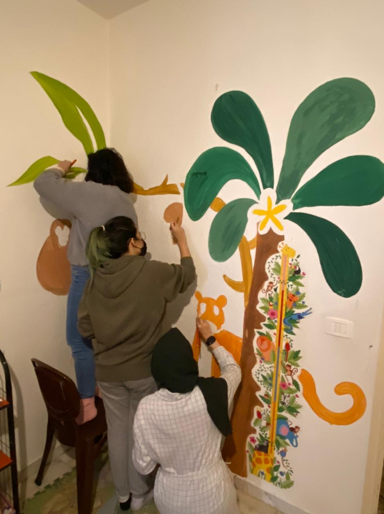
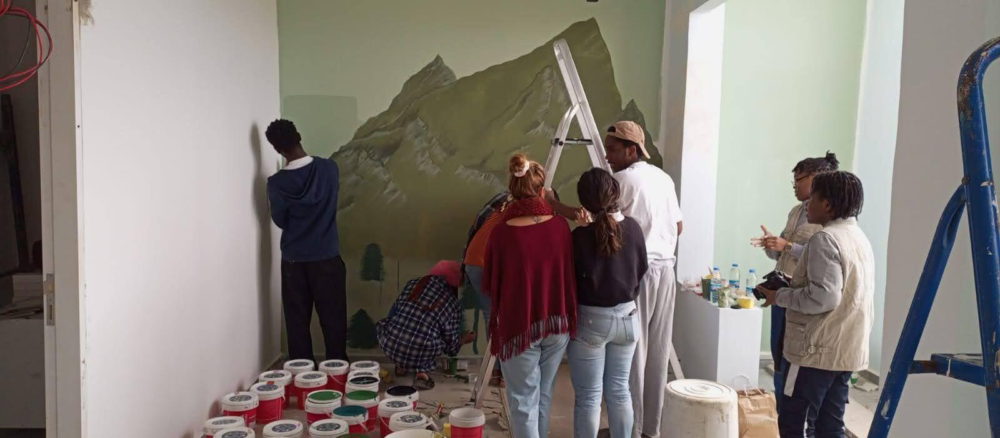
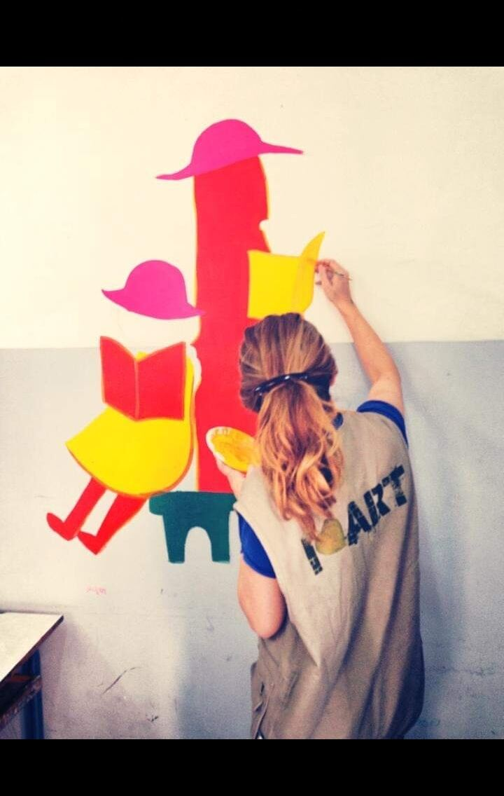
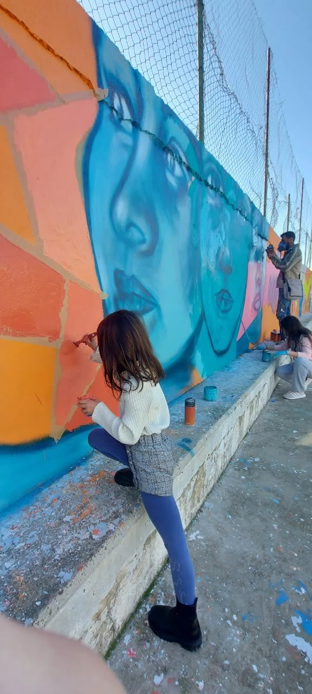
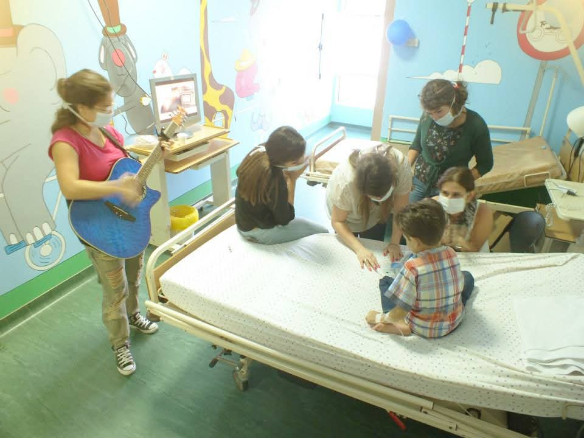

Streets of Colors
A bold geometric mural painted at the Kulturenest — a semi-nomadic hybrid creative hub and cultural space in Sin El Fil — designed and painted with local volunteers.
Filter by project type to see the breadth of work our artists bring to life.
A bold geometric mural painted at the Kulturenest — a semi-nomadic hybrid creative hub and cultural space in Sin El Fil — designed and painted with local volunteers.

A colorful parade mural painted in homes for Beirut explosion survivors in Karantina, bringing warmth and life back into the space.

A jungle-themed mural filled with animals and greenery, painted in a warm room for a child with Down syndrome in Haret Hreik, designed to spark imagination and comfort.

A mural for a safe-space room at Baabda Prison, dedicated to mothers incarcerated with their newborns — inspired by nature, softness, and new beginnings, offering a warm reminder of hope, dignity, and growth.

A wildflower wall illustration designed for a center supporting the elderly, creating a warm space where residents can share their stories and speak freely — because every voice deserves a safe space to bloom.

A literacy-themed mural painted in a reading corner in Zahle, encouraging young readers to spend time with a book.

A wall of large-scale portrait murals painted with volunteers in Deir El Ahmar, Bekaa, in December 2024.

We created art-based circles with cancer patients at Rafic Hariri Hospital, surrounding them with storytelling, art-making, music, and color for their hearts.
Our murals reach cities all over Lebanon — from Beirut to the North and South.
A team we're proud to introduce to the world — it's only by a touch of brush that you can color hearts, change daily perception, and heal souls. Watch "Healing Through the Beauty of Art" below.